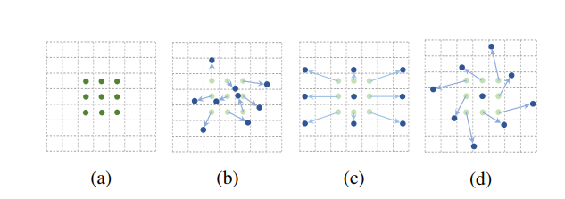
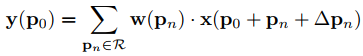
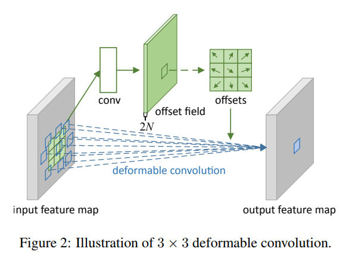
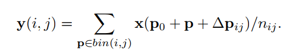
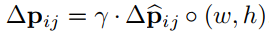
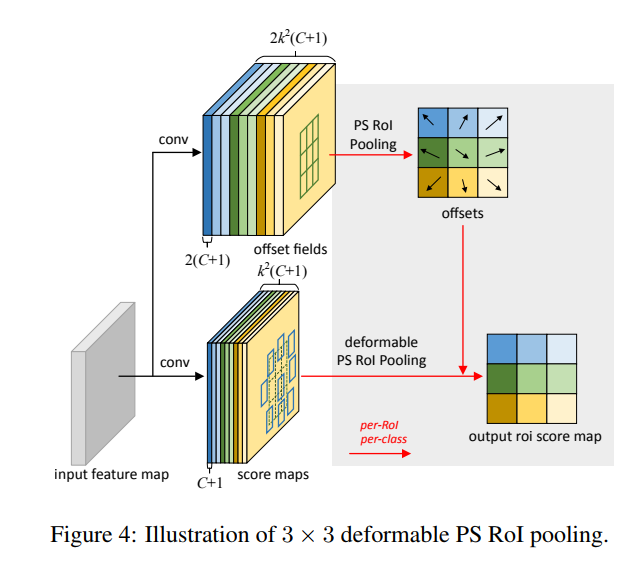

Deformable CN
Deformable CNN는 기본적으로 Faster R-CNN, R-FCN, FCN에 대한 기본지식을 요구합니다.
Deformable Convolution
이 convolution은 왜 변형해야하며 이로서 얻는 점을 알아보도록 하겠습니다.
Convolution’ Problem

위 그림의 (a)가 우리가 일반적으로 사용하는 conv filter입니다. 중간의 점을 기준으로 주위의 8개의 점을 포함하여 하나의 필터가 되는 것입니다.
하지만 이 방식은 문제점이 있었습니다. 바로 그것은 이미지 분류나 물체를 찾는 것에서는 상당히 비효율 적이라는 것이죠.
어떠한 object는 크기가 아주작고, 배경같은 경우에는 이미지중에서 차지하는 비율이 상당히 클 확률이 높습니다. 그래서 해당하는 object(class)에 따라 conv를 바꿔가며 object를 찾을 때 효율적으로 이용하자는 것입니다.
Deformable Window
사실 sliding window도 중점을 기준으로 주의의 값들을 지정하는 것인데, 이는 집합 $R$과 같습니다. $R={(-1, -1), (-1, 0), \cdots, (1, 1)}$
위의 그림처럼 (b), (c), (d)은 $R$의 원소들을 바꾼 것들이라고 할 수 있습니다.
- (b)는 각 offset을 무작위로 바꿨습니다.
- (c)는 offset값들을 증가 시켰습니다.
- (d)는 기울어진 정사각형을 만들도록 offset을 바꿨습니다.
그래서 이를 수식으로 표현해보자면
- $x$: feature map
- $w$: filter의 값
- $p$는 offset 값입니다.
- $\Delta$는 추가적인 값

그래서 다음 층의 position에 해당하는 값은 sliding window의 중점에서 가중치와 x의 바뀐 offset로부터 나옵니다.
Bilinear Interpolation
하지만 이 $\Delta p_0$는 실수 값입니다. 하지만 feature map에는 실수 좌표값이 없으므로 bilinear interpolation(양선형 보간법)이란 것을 이용하여 값을 대체합니다. $q$는 feature map 상의 모든 값들을 열거한 것을 말합니다.
$$
G(\cdot, \cdot) = \text{bilinear interpolation kernel} \\
G(q,p) = g(q_x, p_x) \cdot g(q_y, p_y) \\
g(a, b) = max(0, 1 - |a - b|)
$$
Deformable Convolution
input feature map 과 동일한 shape의 conv를 만드는 때 이때 conv의 filter size는 $2N$($N$=$R$의 원소 개수)입니다. 각각의 칸은 2N개의 offset을 예측하는데 이때 2N인 이유는 (x,y) 두쌍의 offset을 예측해야 하기 때문입니다.

Deformable ROI Pooling
일반적인 ROI Pooling과는 다르게 offset 값들을 다르게 함으로 그 바뀐 offset 값들을 포함해서 pooling을 해야합니다.

ROI bin에 해당하는 각각의 deformable한 값들을 average pooling 하는 것입니다. 마찬가지로 $x$의 값이 실수이니 bilinear interpolation으로 값을 구합니다.
이떄 fc를 거친 값들은 정규화된 offset $\Delta \hat p_{ij}$를 만들어냅니다.

이 $\gamma$는 경험에 근거하여 0.1로 하고 ROI size에 맞게 이 값들을 조정해줍니다.
Position-Sensitive ROI Pooling
이 PS ROI Pooling은 PS ROI Pooling과 Deformable PS ROI Pooling으로 이루어져 있습니다.
참고로 이 PS Pooling은 R-FCN에 기초한 것입니다.

PS ROI Pooling
이는 input feature map에서 분할된 위쪽 layer인데 여기서는 $2k^2(C+1)$개의 filter를 가지고 있습니다.
- 각각의 filter는 offset를 예측하는데, 2가 붙은 이유는 (x, y)두 값을 예측하기 때문입니다.
- 예측한 두 (x, y) 쌍이 한 칸이되어 $k$ x $k$ 즉 길이가 $k$인 정사각형(filter)의 한 칸이 되는 것입니다.
- $C+1$는 각각의 Class에 대해 offset을 예측하기 때문이고 +1 의 경우는 background 입니다.
Deformable PS ROI Pooling
여기서는 각각의 ROI에 대해 PS ROI Pooling을 거친 offset을 받아와 각각의 class마다 roi의 score를 매기는 것입니다. 마찬가지로 여기서는 $k^2(C+1)$개의 filter를 가지고 있습니다.
ROI에 offset을 적용시킨 각각의 filter 한장씩이 해당 Class에 대해 socre를 매겨 길이 $k$ 정사각형을 만듭니다. 이 정사각형의 값들을 모두 모아서 해당 class에 대해 score를 매깁니다.